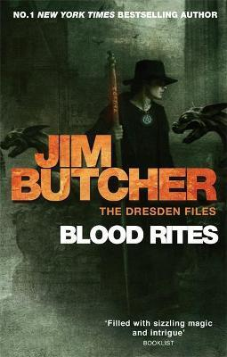

Jim Butcher
The Dresden Files
Harry's business as a private investigator has been quiet lately - so when the police bring him in to consult on a grisly double murder committed with black magic, he's seeing dollar signs. But where there's black magic, there's a black mage behind it. And now that mage knows Harry's name. Magic - it can get a guy killed. The first case file of Harry Dresden, private investigator and wizard, Storm Front is the first novel in the Sunday Times bestselling Dresden Files series, perfect for fans of Supernatural and urban fantasy fiction by authors such as Benedict Jacka and Ben Aaronovitch.
Business has been slow lately for Harry Dresden. Okay, business has been dead. Not undead - just dead. You would think Chicago would have a little more action for the only professional wizard in the phone book. But lately, Harry hasn't been able to dredge up any kind of work - magical or mundane. But just when it looks like he can't afford his next meal, a murder comes along that requires his particular brand of supernatural expertise. A brutally mutilated corpse. Strange-looking paw prints. A full moon. Take three guesses. And the first two don't count . . . Magic - it can get a guy killed.

Harry has faced some terrifying foes during his career. Giant scorpions. Oversexed vampires. Psychotic werewolves. It comes with the territory when you're the only wizard in town. But in all Harry's years of supernatural sleuthing, he's never faced anything like this: the spirit world's gone loco. All over town, ghosts are causing trouble - and not the door-slamming, boo-shouting variety. These ghosts are tormented, violent, and deadly. Someone is stirring them up to wreak havoc. But why? And why do so many of the victims have ties to Harry? If Harry doesn't figure it out soon, he might just wind up a ghost himself.

Since his girlfriend left town to deal with her newly acquired taste for blood, Harry's been down and out. He can't pay his rent. He's alienating his friends. He can't recall his last shower. Then when things are at their worst, the Winter Queen of Faerie saunters in with an offer Harry can't refuse. All he has to do is find out who murdered the Summer Knight, the Summer Queen's right-hand man, and clear the Winter Queen's name. It seems simple, but Faerie politics seldom work out that way. Then Harry discovers the fate of the entire world rests on this case. So no pressure

Harry Dresden should be happy that business is good - makes a change. But now he's getting more than he bargained for: a duel with the Red Court of Vampires' champion, who must kill Harry to end the war between vampires and wizards; professional hit men using Harry for target practice; the missing Shroud of Turin (less missing than expected) and a headless corpse the Chicago police need identifying . . . Not to mention the return of Harry's ex-girlfriend Susan, still struggling with her semi-vampiric nature. And who seems to have a new man. Some days, it just doesn't pay to get out of bed. No matter how much you're charging.

Harry's had worse assignments than going undercover on the set of an adult film. Dodging flaming monkey poo, for instance. Or going toe-to-leaf with a plant monster. Still, there's something troubling about this case. The Producer believes he's afflicted by an entropy curse - but it's the women around him who are dying. And Harry only got involved as a favour to Thomas, his flirtatious self-absorbed vampire acquaintance. Thomas has a personal stake in the case Harry can't work out, until his investigation leads him straight to Thomas's oversexed relatives. Harry's about to discover the skeleton in Thomas's family closet: a revelation that will change Harry's life for ever.
Luckily, however, he's not alone. Although most people don't believe in magic, the Chicago P.D. has a Special Investigations department, headed by his good friend Karrin Murphy. They deal with the . . . stranger cases. It's down to Karrin that Harry sneaks into Graceland Cemetery to meet a vampire named Mavra. Mavra has evidence that would destroy Karrin's career, and her demands are simple. She wants the Word of Kemmler - and all the power that comes with it. But first, Harry's keen to know what he'd be handing over. Before long he's racing against time, and six necromancers, to get the Word. And to prevent a Halloween that would truly wake the dead.
Harry has no friends on the White Council of Wizards, who find him brash and undisciplined (and they may have a point). However, now vampire wars have thinned out the wizards a little, they need him. So before he can blink, he's assigned to investigate rumours of black magic. Harry's other problem is an old friend's daughter - all grown-up and in trouble already. Her boyfriend insists he's innocent of something resembling a crime straight out of a horror film. This first impression turns out to be . . . well, pretty accurate, as Harry discovers malevolent entities feeding on fear. All in a day's work for a wizard, his dog, and a talking skull named Bob.

A series of apparent suicides rings alarm bells with the police, and Harry is hired. At the first crime scene he hits pay dirt, discovering an unmistakable magical taint. There's also a message especially for him, and it ain't pretty. The 'killings' will continue if Harry can't halt his tormentor, but the evidence implicates his half-brother, which just doesn't add up. Unfortunately Harry's digging around attracts some powerful vampires with a stake in the result. Soon, whichever way he turns, Harry will find himself outnumbered, outclassed and dangerously susceptible to temptation. And if he screws up, his friends will die.

Harry Dresden is feeling happy. No one's tried to kill him in nearly a year, and the worst problem he's had lately is removing stains his apprentice bungled into his carpeting. The future seems bright. Unfortunately, the past isn't looking nearly so optimistic. An old bargain placed Harry in debt to Mab, faerie monarch of the Winter Court and the Queen of Air and Darkness. Harry still owes her two favours, and it's time to pay up. It's a small favour he really can't refuse, but it will trap Harry between a nightmarish foe and a deadly ally, stretching his skills and loyalties to their limits. It figures. Everything was going too well to last.

Harry has always tried to keep his nose clean where the White Council of Wizards is concerned, but past misdeeds haven't gone down well. Which places him in an awkward position. Morgan, formerly his chief persecutor on the Council, has been wrongly accused of treason. Facing the ultimate punishment, Morgan needs someone with a knack for backing the underdog, however much that someone isn't interested. Soon, Harry is working to clear the less-than-agreeable Morgan's name, hiding from the Council and bounty hunters alike and seeking the true turncoat. A single mistake may mean that heads - quite literally - could roll. And one of them might be his.

But even a career of narrow escapes and supernatural shenanigans hasn't prepared Harry for this. A vampire with a grudge has kidnapped his daughter. A daughter he never knew he had. Furthermore, this vampire plans to use her blood in a violent ritual sacrifice - designed to kill Harry, his ex-partner Susan and their child. As allies are perilously thin on the ground, Harry must find a new source of strength. In the past, there had always been a line he wouldn't cross, and he's never given in to the full fury of his own untapped dark powers. But then, only his own life was at stake.

Trapped in a realm that's not quite here, yet not quite anywhere else, Harry learns that three of his loved ones are in danger. Only by discovering his assailant's identity can he save his friends, bring criminal elements to justice, and move on himself. It would just be easier if he knew who was at risk. And had a (working) crystal ball. And access to magic. Instead, he is unable to interact with the physical world - invisible to all but a select magical few. He's also not the only silent presence roaming Chicago's alleys. Hell, he put some there himself. Now, they're looking for payback.
You can't keep a good wizard down - even when he wants to stay that way. For years, Harry Dresden has been Chicago's only professional wizard, but a bargain made in desperation with the Queen of Air and Darkness has forced him into a new job: professional killer. Mab, the mother of wicked faeries, has restored the mostly-dead wizard to health, and dispatches him upon his first mission - to bring death to an immortal. Even as he grapples with the impossible task, Dresden learns of a looming danger to Demonreach, the living island hidden upon Lake Michigan, a place whose true purpose and dark potential have the potential to destroy billions and to land Dresden in the deepest trouble he has ever known - even deeper than being dead. How messed up is that? Beset by his new enemies and hounded by the old, Dresden has only twenty four hours to reconnect with his old allies, prevent a cataclysm and do the impossible - all while the power he bargained to get - but never meant to keep - lays siege to his very soul.

Harry Dresden, Chicago's only professional wizard, is about to have a very bad day. As Winter Knight to the Queen of Air and Darkness, Harry never knows what the scheming Mab might want him to do. Usually, it's something awful. This time, it's worse than that. Mab's involved Harry in a smash-and-grab heist run by one of his most despised enemies to recover the literal Holy Grail from the vaults of the greatest treasure horde in the world - which belongs to the one and only Hades, Lord of the Underworld. Dresden's always been tricky, but he's going to have to up his backstabbing game to survive this mess - assuming his own allies don't end up killing him before his enemies get the chance . . .
When the Supernatural nations of the world meet up to negotiate an end to ongoing hostilities, Harry Dresden, Chicago's only professional wizard, joins the White Council's security team to make sure the talks stay civil. But can he succeed, when dark political manipulations threaten the very existence of Chicago - and all he holds dear?